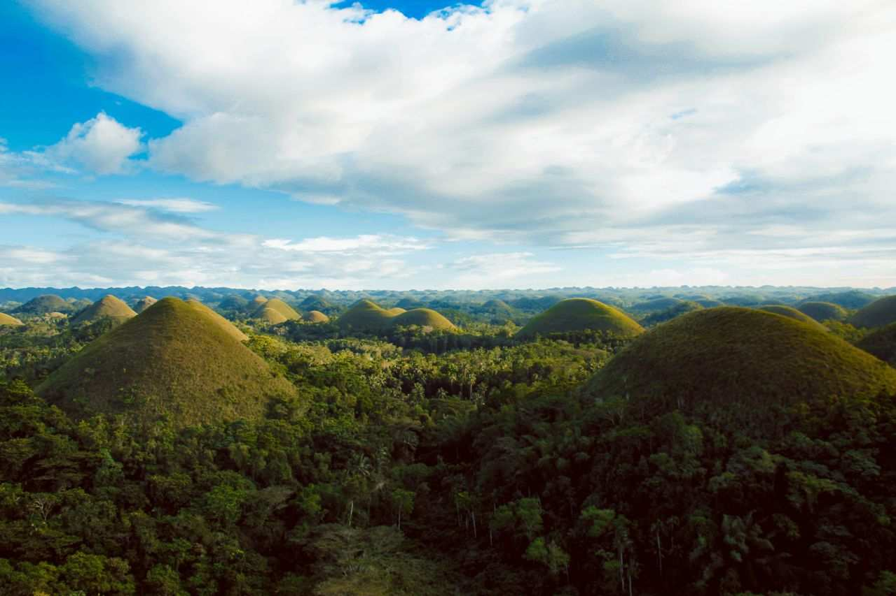

Two days in Bohol is enough to see the Chocolate Hills, meet a tarsier and spend an afternoon on a Panglao beach. Three days adds the early boat to Balicasag and a little room to rest, and for most first-timers that extra night is the better deal. Either way, the trick is the same: give the inland countryside its own day, give the sea its own morning, and never try to squeeze both into one.
The plans below assume you sleep every night on Panglao, the small island joined by bridges to Tagbilaran, the provincial capital. It has the airport, most of the hotels and the boats for island-hopping, so you avoid packing up and moving halfway through a short trip. Each day is built around the things that actually decide your schedule in Bohol: ferry times, a countryside loop that eats most of a day, sunrise boat departures and the tide at Virgin Island.
You'll find a 2-day plan, a 3-day plan, what each stop involves, rough costs and the season to aim for. Prices are planning figures, not quotes, so confirm them before you pay.

Bohol in 2 or 3 days at a glance
- Base: Panglao Island, near Alona Beach for first-timers
- 2 days: countryside loop, then a Panglao beach day
- 3 days: slow Panglao arrival, countryside loop, island-hopping morning
- Countryside loop: 6 to 8 hours by private van or joiner tour
- Island-hopping: leaves around sunrise, back before lunch
- Steadiest months: November to May
How Many Days in Bohol Is Enough?
It depends on what you want to tick off. The Chocolate Hills, the tarsiers and the Loboc River all sit inland on the Bohol mainland, about an hour and a half by road from Panglao, so seeing them takes most of a day no matter how you arrange it. The reef at Balicasag and the sandbar at Virgin Island are a morning trip by outrigger boat from the Panglao side. Those are two separate days before you have spent a single lazy hour on the sand.
Two days works if you arrive early on the first morning and don't mind a full schedule. Three days lets you land, settle in and see everything without setting an alarm every day. With four or five, you can add Anda on the east coast or a couple of dive days, but that is a different trip.
Getting to Bohol for a Short Trip
Most visitors come from Cebu by fast ferry. Your arrival time matters more than anything else on a 2-day trip, because the countryside loop needs a morning start.
The usual way in
Cebu City to Tagbilaran by fast ferry
OperatorsOceanJet, SuperCatFareFrom about ₱750–₱800First tripsEarly morning
-
Step 1
Book an early sailing
On a 2-day trip, take a boat that leaves Cebu around 6:00 a.m. and lands in Tagbilaran at about 8:00. Anything after mid-morning pushes the countryside loop into the late afternoon. Be at the pier at least 30 minutes before departure.
-
Step 2
Have your driver meet you at the port
Ask the van or car you've booked for the countryside to pick you up at Tagbilaran port with your luggage. You start the loop straight away and check in on Panglao that evening.
-
Step 3
Book the return with a buffer
Pick a late-afternoon sailing back from Tagbilaran, and allow time for the drive off Panglao. Traffic builds near the bridges at rush hour.
Coming from Manila or elsewhere? Fly into Bohol-Panglao International Airport, which sits on Panglao itself, 15 to 30 minutes from Alona.
Sailing times and fares change through the year, and fuel surcharges can be added on top. Our Bohol day trip from Cebu guide goes through the sailings in more detail.
Bohol 2-Day Itinerary
This version is tight but very doable. It works best if you're on the early ferry and happy to keep moving on day one.
- Day 1Countryside loop
Straight from the port: churches, tarsiers, Loboc lunch cruise, the mahogany forest and the Chocolate Hills. Back on Panglao by early evening for a late dinner near Alona.
- Day 2Panglao and the beach
Hinagdanan Cave before the tour vans, Dauis Church, lunch with a sea view, then the beach until it's time to leave for your ferry or flight.
The cost of fitting Bohol into two days is the sea. There's no room for island-hopping unless you drop the Panglao loop and take the sunrise boat on day two, which leaves you heading for the port tired and salty. If Balicasag matters to you, add the third day.
Bohol 3-Day Itinerary
Three days follows a simple rhythm: an easy arrival, a long day inland, and an early morning at sea before you go home.
Day 1 · ArrivalSettle in on Panglao
- MorningFerry or flight in, transfer to your hotelLeave bags if your room isn't ready
- AfternoonDauis Church and Hinagdanan CaveBoth on the Dauis side, close to the bridges
- EveningSunset and dinner at AlonaBook tomorrow's van and the island-hopping boat tonight
Day 2 · InlandThe full countryside loop
- 8:00 a.m.Pickup on PanglaoBlood Compact Shrine and Baclayon Church on the way out
- MorningTarsier sanctuaryQuiet, short visit; opens at 9:00 a.m.
- MiddayLoboc River lunch cruiseBuffet on a floating restaurant
- AfternoonBilar forest, then the Chocolate HillsBack on Panglao around 5:00 p.m.
Day 3 · The seaDolphins, Balicasag and Virgin Island
- SunriseBoat out from AlonaDolphin watching first, then snorkelling at Balicasag
- Late morningVirgin Island sandbarTimed for the tide; back on shore before lunch
- AfternoonShower, lunch and the trip homeOr a quiet beach if your flight is late
Putting the sea on the last morning rather than the first gives you two chances at it. If the weather cancels the boats on day three, you still have the countryside behind you, and you can often book an earlier slot on a later trip. Don't save the countryside for your departure day, though. The loop runs late enough to put an afternoon ferry at risk.
The Countryside Day, Stop by Stop
Whether you join a shared tour or hire a van, the loop covers roughly the same stops. Drivers shuffle the order depending on traffic and crowds, so tell yours you'd like to avoid backtracking and see the tarsiers in the morning.
Blood Compact Shrine and Baclayon Church
These are quick stops on the way out of Tagbilaran. The shrine marks the 1565 blood compact between the Spanish explorer Miguel López de Legazpi and the Boholano chieftain Datu Sikatuna. Baclayon Church, a few kilometres further along the coast, is one of the oldest stone churches in the country. Allow 10 to 15 minutes at each.
The tarsiers
The Philippine tarsier is tiny, nocturnal and easily stressed, which is why the better sites keep visits short and silent: no flash, no touching, no loud voices. The Philippine Tarsier Sanctuary in Corella is the one run with conservation in mind. Plan on 30 to 60 minutes there, and skip the roadside places that keep tarsiers in cages.
Loboc River lunch cruise
Floating restaurants drift upriver past palms and nipa while you eat a Filipino buffet, often with a singer or a small band on board. The cruise lasts about an hour. It is still running, though riverbank protection work has changed the view along some stretches, so expect a few construction sites between the green banks.
Bilar Man-Made Forest
A road of roughly 2 kilometres runs through dense mahogany planted decades ago, and the trunks crowd in from both sides until the road feels roofed over in green. Most tours stop for a few minutes of photos. Watch for traffic if you step onto the road for a picture.
Chocolate Hills
More than 1,200 rounded limestone hills, with 1,268 the figure most often cited, spread across Carmen and the towns around it. The main viewing deck in Carmen sits at the top of about 200 steps, and the entrance fee has been quoted at about ₱150. The hills turn brown in the dry months from about March to May, which gives them their name, and stay green for the rest of the year. For a different angle, the Chocolate Hills Adventure Park nearby has a bike zip line.
The Island-Hopping Morning
Boats leave the Alona area around sunrise because spinner dolphins are most often seen early. After the dolphins comes Balicasag, a small marine sanctuary about 30 to 45 minutes out, where turtles feed on a reef that drops into deep water. Virgin Island, a curving sandbar that shows itself at low tide, is usually the last stop.
Both islands now have rules that many older blogs don't mention. Balicasag caps snorkellers and divers each day, and Virgin Island, after a long closure, reopened with an entrance fee, a cap on visitors and a two-hour limit per group. Ask your operator what the price covers. Our Balicasag and Virgin Island guide lists the fees and rules in full.
Where to Stay for 2 or 3 Nights
One hotel on Panglao for the whole trip is the simplest choice. You unpack once, island-hopping boats leave from right there, and countryside tours pick you up at the door. Tagbilaran port is roughly 20 to 30 minutes away when the bridges are clear.
Within Panglao, the choice comes down to convenience against quiet. Alona puts restaurants, dive shops and boat operators within walking distance, but the beach gets busy. Dumaluan and the stretches near Danao have more room on the sand and fewer boats. Our guide to Panglao and Alona Beach compares the areas.
How Much a 2 to 3 Day Trip Costs
A private van makes sense for three or more people, since the cost splits and you control the pace. Solo travellers and couples usually save with a joiner tour, as long as they don't mind the fixed schedule.
Best Time to Go
November to May brings the calmest seas and the most dependable island-hopping. From June to October, afternoon rain is common and rough water can cancel the Balicasag boats, though the countryside loop still runs in most weather. December and the long holiday weekends are busy, so book rooms and the island-hopping boat early. In the hottest months, March to May, set off early on countryside day, because the climb to the Chocolate Hills deck is tough at midday.
Quick Answers
Is two days enough for Bohol?
Yes, for the main sights. Two days covers the countryside loop and a Panglao beach day, but you'll have to skip island-hopping unless you add a third day.
Can I see the Chocolate Hills and go island-hopping on the same day?
Not comfortably. Island-hopping takes the morning and the countryside loop takes 6 to 8 hours, so give each its own day.
Where should I stay in Bohol for a short trip?
Stay on Panglao for every night. Alona Beach is the easiest base for first-timers; Dumaluan and Danao are quieter.
Is a joiner tour or a private van better for the countryside?
Joiner tours are cheaper per person. A private van costs more but lets you pick the order, start early and stay longer at the stops you like.
Three days is the length to aim for if you can manage it. That way the hills, the tarsiers and the reef each get the time they need, and you still have a few unhurried hours at the beach.


Comments
No comments yet. Been here recently? Share a tip or ask a question.
Leave a Reply